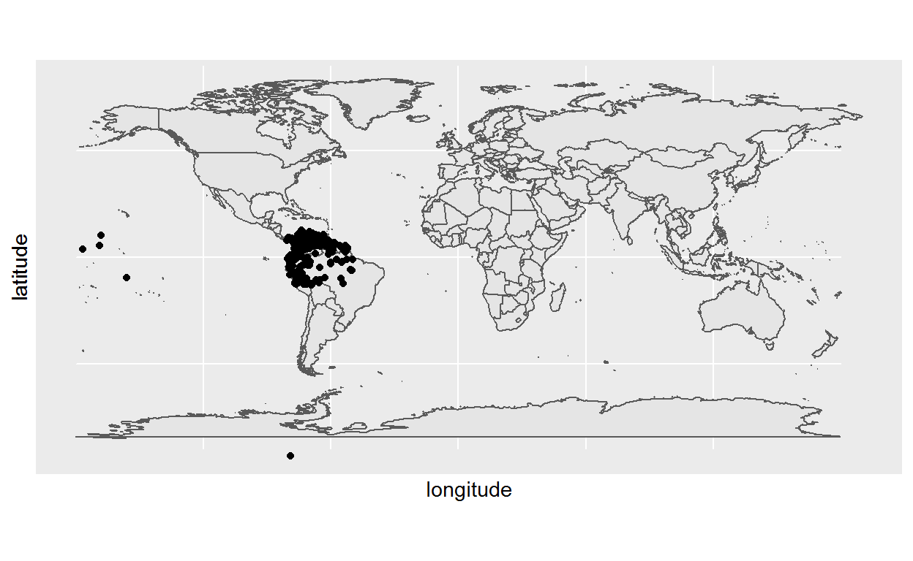
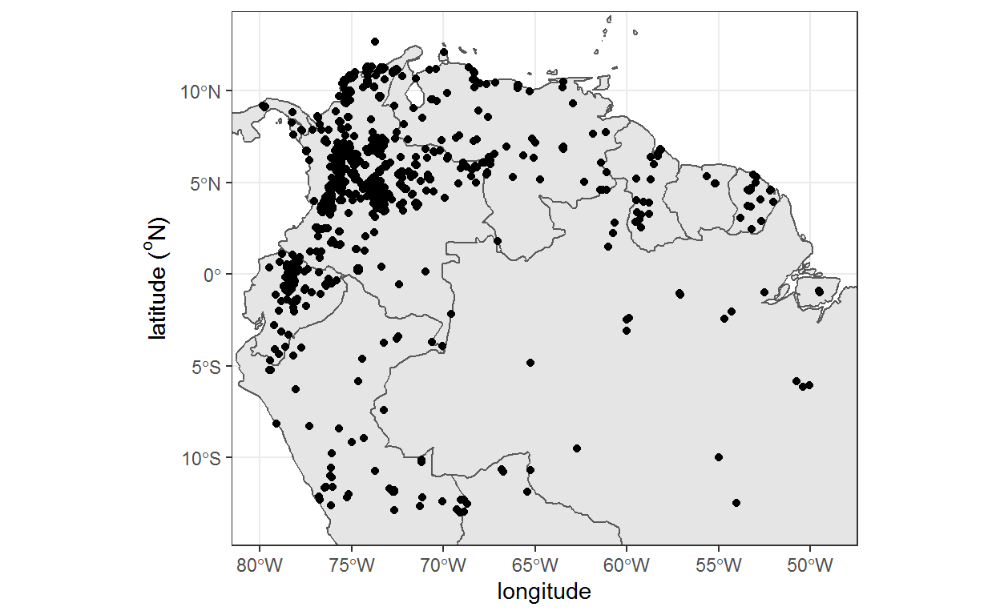
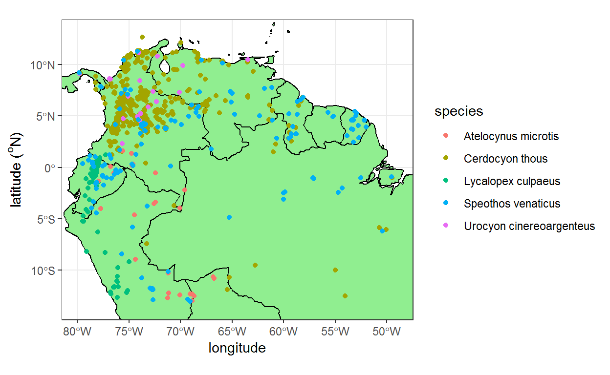
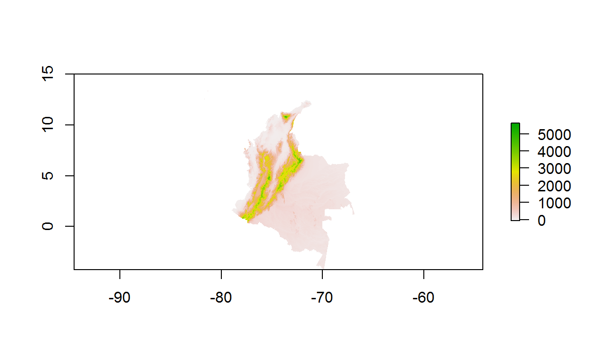
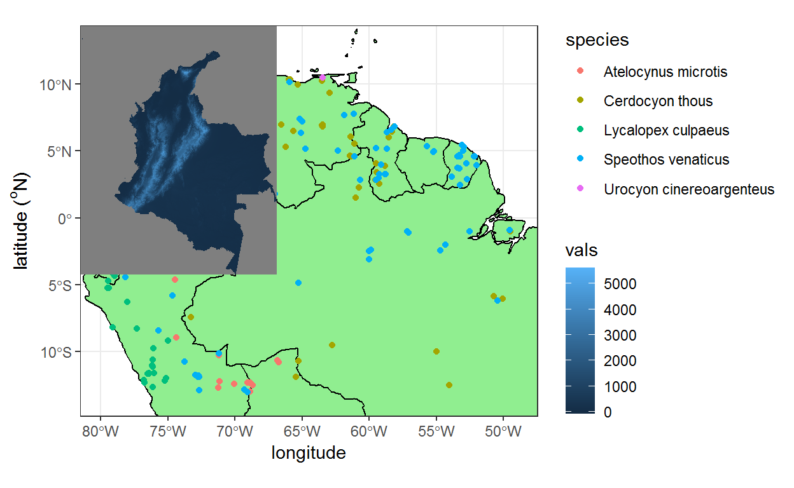
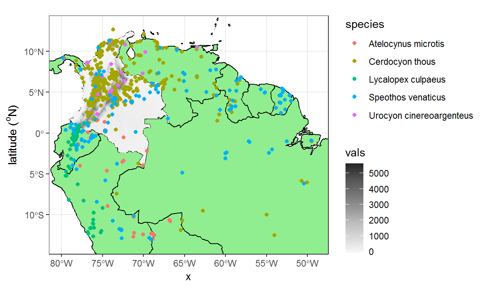
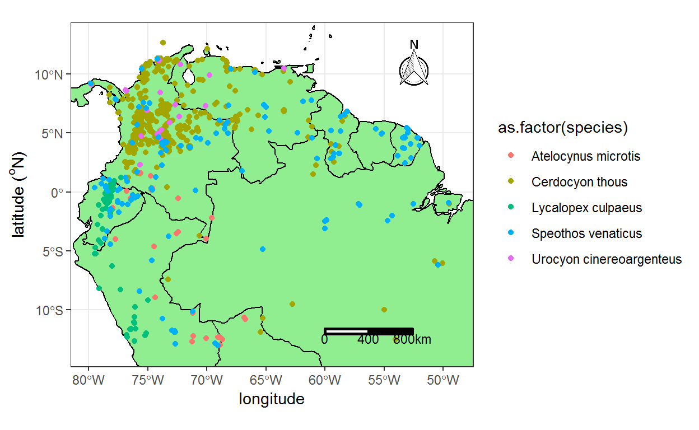
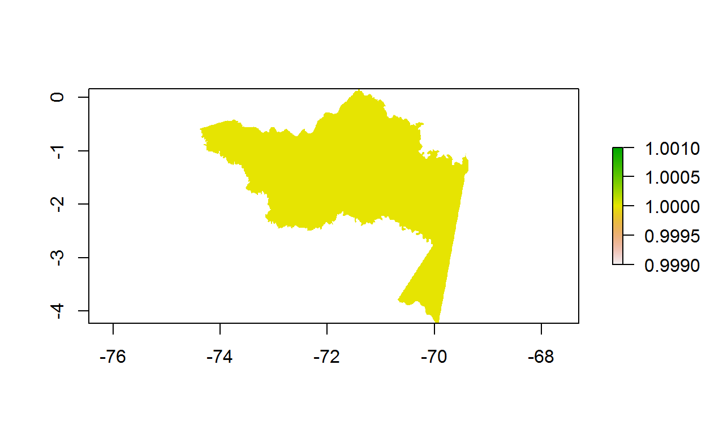

Día 2
Comenzamos cargando los paquetes básicos necesarios para generar nuestros primeros mapas, es decir, ggplot2 y sf.
También utilizaremos el paquete maps para cargar un mapa global. Existen otros paquetes que también funcionan para este propósito, como el paquete rnaturalearth, el cual proporciona un mapa de países de todo el mundo.
library(maps)Ahora podemos cargar el mapa global usando la función map(). Además, transformaremos el objeto a una simple feature
Simple feature collection with 253 features and 1 field
Geometry type: MULTIPOLYGON
Dimension: XY
Bounding box: xmin: -180 ymin: -85.19218 xmax: 190.2708 ymax: 83.59961
Geodetic CRS: WGS 84
First 10 features:
ID geom
1 Aruba MULTIPOLYGON (((-69.89912 1...
2 Afghanistan MULTIPOLYGON (((74.89131 37...
3 Angola MULTIPOLYGON (((23.9665 -10...
4 Anguilla MULTIPOLYGON (((-63.00122 1...
5 Albania MULTIPOLYGON (((20.06396 42...
6 Finland MULTIPOLYGON (((20.61133 60...
7 Andorra MULTIPOLYGON (((1.706055 42...
8 United Arab Emirates MULTIPOLYGON (((53.92783 24...
9 Argentina MULTIPOLYGON (((-64.54916 -...
10 Armenia MULTIPOLYGON (((45.55235 40...Ejercicio
Identifique las principales características del objeto world1:
¿Cuántos atributos y polígonos tiene? ¿Cuál es el sistema de coordenadas? ¿Cuál es su extensión?
Ejecicio extra ¿Cómo reescribiría la función anterior utilizando %>% ?
Ahora podemos generar un plot utilizando los conceptos aprendidos durante el día anterior.
En este caso, debemos utilizar geom_sf() con el fin de llamar nuestro objeto sf
El siguiente paso consiste en anadir puntos de distribución de especies sobre nuestro mapa. Para ello, vamos a utilizar los puntos de localidades de algunas especies de cánidos presentes en Sudamérica.
dat<-read_csv("canidae_records.csv") # ajuste la ruta al archivo si se requierePara añadir los puntos en nuestro mapa, utilizaremos la función geom_point()
ggplot() +
geom_sf(data = world1) +
geom_point(data = dat, aes(x = longitude, y = latitude))
Note que hemos utilizado ggplot() sin algún argumento dentro de los corchetes. Esto se debe a que trazamos varias capas, cada una con una fuente de datos diferente, por lo que debemos especificar los datos proporcionados a cada geom por separado (data = world1 para geom_sf() y data = dat para geom_point).
Este mapa se ve bien, pero no es necesario que representemos al mundo entero aquí. Por lo tanto, podemos modificar nuestro mapa estableciendo límites en las coordenadas. Además, podemos cambiar los colores de nuestros objetos.
En primer lugar, necesitamos definir la extensión de nuestros puntos
Recordemos que hay unos puntos erróneos en este dataset original. Por lo tanto, filtraremos algunos datos
Ahora revisamos de nuevo el intervalo que define la extensión de los datos.
Estos son los valores que utilizaremos de guía para definir la extensión de nuestro mapa mediante el uso de coord_sf(). Note que hemos anadido los argumentos xlim y ylim
El nuevo mapa con la extensión corregida luce de la siguiente manera:

Ejercicio
Genere el mismo mapa pero esta vez coloree los puntos de acuerdo a la especie. Además, cambie el color de los países a verde usando la siguiente opción:
color = “black”, fill = “lightgreen”

Los datos que se presentan en una matriz de celdas o píxeles, también conocidos como datos ráster, se pueden leer y manipular con el paquete ráster. Carguemos ese paquete ahora:
La función raster() nos sirve para cargar objetos raster dentro de R. En este caso, cargaremos una capa de elevación para el territorio colombiano.
DEM_COL<-raster("D:/BoxFiles/Box Sync/CodigoR/Intro_R_espacial_light/data/datos_espaciales/DEM_Colombia.tif")
DEM_COLclass : RasterLayer
dimensions : 2308, 1797, 4147476 (nrow, ncol, ncell)
resolution : 0.008333333, 0.008333333 (x, y)
extent : -81.84167, -66.86667, -4.233333, 15 (xmin, xmax, ymin, ymax)
crs : +proj=longlat +datum=WGS84 +no_defs
source : DEM_Colombia.tif
names : Band_1
values : -66, 5629 (min, max)raster::plot(DEM_COL)
Tome un tiempo para inspeccionar las principales características del raster, incluyendo su resolución y extensión.
La función plot() del paquete raster crea una primera gráfica bastante decente. Sin embargo, tenga en cuenta que la escala de colores no es tan apropiada para las elevaciones: verde donde las elevaciones son altas y rojo donde son bajas. Además, estos colores predeterminados no serían tan buenos si nuestra audiencia no pudiese ver el color rojo-verde.
Vamos entonces a crear el gráfico anterior usando ggplot. Antes de esto, necesitamos convertir el ráster en una tabla:
# A tibble: 6 x 3
x y vals
<dbl> <dbl> <dbl>
1 -81.8 15.0 NA
2 -81.8 15.0 NA
3 -81.8 15.0 NA
4 -81.8 15.0 NA
5 -81.8 15.0 NA
6 -81.8 15.0 NAAhora podemos incluir el raster en nuestro mapa utilizando la función geom_tile()
ggplot() +
geom_sf(data = world1, color = "black", fill = "lightgreen") +
geom_point(data = dat_filt, aes(x = longitude,
y = latitude, color =species))+
coord_sf(xlim = c(-80, -49), ylim = c(-13.5, 13)) +
labs(y = expression(paste("latitude (" ^o, "N)"))) +
geom_tile(data = dat_grid, aes(x = x, y = y, fill = vals))+
theme_bw()
Ejercicio
El anterior mapa no se encuentra bien representado. Necesitamos entonces hacer varias modificaciones. Siga estos pasos para generar el mapa presentado abajo
geom_point, geom_tile) con el fin de que los puntos no queden ocultos por el rasterscale_fill_distiller(type = “seq”, palette = “Greys”, direction = 1)

Hay varios paquetes disponibles para adicionar la barra de escala en un mapa (e.g. prettymapr, ggmap, legendMap). En nuestro caso, nos centraremos en ggsn.
Las funciones scalebar() y north() permiten agregar simultáneamente el símbolo del norte y una barra de escala en el mapa. Para ello,es importante definir las coordenadas que determinan los límites de la ubicación de cada elemento, así como la proporción que ocupa cada elemento dentro de esos límites.
utilice ?ggsn::scalebar y ?ggsn::north para revisar todos los argumentos que pueden ajustarse en estas funciones.
ggplot() +
geom_sf(data = world1, color = "black", fill = "lightgreen") +
#geom_tile(data = dat_grid, aes(x = x, y = y, fill = vals))+
#scale_fill_distiller(type = "seq", palette = "Greys",
# direction = 1)+
geom_point(data = dat_filt, aes(x = longitude,
y = latitude, color =as.factor(species)))+
coord_sf(xlim = c(-80, -49), ylim = c(-13.5, 13)) +
theme(legend.position = c(0.75,0.2),
legend.title = element_blank(),
legend.text = element_text(size = 14),
text = element_text(size = 14),
axis.text.x = element_text(size = 12),
axis.text.y = element_text(size = 12))+
labs(y = expression(paste("latitude (" ^o, "N)"))) +
theme_bw()+
ggsn::scalebar(dist_unit = "km", dist = 400, transform = TRUE,
x.min = -60, x.max = -50,
y.min = -12, y.max = -10,
height = 0.2,
model = "WGS84",location = "bottomleft",
st.size = 3,
st.dist = 0.2)+
ggsn::north(x.min = -60, x.max = -50,
y.min = 5, y.max = 13,scale = 0.5)
Ejercicio
Modifique la posición y el tamano de la escala y el norte en el mapa anterior.
Antes de continuar, vamos a detenernos a hablar de proyecciones. Una proyección cartográfica es una forma de trasladar la superficie de un globo en un plano para hacer un mapa. Las proyecciones transforman de manera sistemática las latitudes y longitudes geográficas en ubicaciones en un plano. Es fundamental que siempre que trabaje con datos espaciales, se asegure que la proyección geográfica es la misma para todos los elementos que está analizando. De lo contrario, puede estar cometiendo errores en los cálculos si las capas no se encuentran bien alineadas.
Con el fin de ilustrar cómo transformar el sistema de coordenadas de un objeto, vamos a convertir nuestra tabla de registros a un objeto sf.
Primero, cargue los datos de registros de mamíferos para Colombia.
dat_mamm<-read.csv("mamiferos_COL_GBIF.csv")Ahora cargaremos una capa de elevación para Colombia que se encuentra en un sistema de coordenadas distinto. Inspecciones los atributos de este raster.
DEM_prj<-raster("D:/BoxFiles/Box Sync/CodigoR/Intro_R_espacial_light/data/datos_espaciales/DEM_Colombia_prj.tif")
DEM_prjclass : RasterLayer
dimensions : 6932, 5400, 37432800 (nrow, ncol, ncell)
resolution : 309.7382, 309.7382 (x, y)
extent : 132554.2, 1805140, 18569.34, 2165675 (xmin, xmax, ymin, ymax)
crs : +proj=tmerc +lat_0=4.59620041666667 +lon_0=-74.0775079166667 +k=1 +x_0=1000000 +y_0=1000000 +ellps=GRS80 +units=m +no_defs
source : DEM_Colombia_prj.tif
names : Band_1
values : -66, 5582 (min, max)El siguiente paso consiste en transformar nuestra tabla de datos a un vector de puntos con coordenadas definidas. Para ello, utilizaremos la función coordinates() con el fin de identificar las columnas que contienen las coordenadas. Posteriormente, definiremos el sistema de coordenadas original de los datos mediante la función proj4string().
#primero guardamos nuestro objeto
dat_mamm_sp<-dat_mamm
#identificar las columnas que contienen las coordenadas
coordinates(dat_mamm_sp) <- c("longitude", "latitude")
#definir el sistema de coordenadas
proj4string(dat_mamm_sp) <- CRS( "+proj=longlat +datum=WGS84 +no_defs +ellps=WGS84 +towgs84=0,0,0 ")Ahora que tenemos nuestro vector de puntos, podemos reproyectar nuestros datos en el sistema de coordenadas de la capa de elevación
dat_mamm_prj<- spTransform(dat_mamm_sp, projection(DEM_prj))Genere un gráfico combinando las funciones base plot() y points() para confirmar que los puntos si se superponen.
Anteriormente, la transformación de objetos vector a raster se realizaba mediante la función del paquete raster rasterize. Sin embargo, la función fasterize() del paquete fasterize es mucho más eficiente para cumplir con este propósito.
En este ejercicio, transformaremos algunos polígonos de departamentos a capas raster. Primero, llamaremos nuestro polígono utilizando la función st_read()
#importar shapefile de departamentos
departamentos<-st_read("D:/BoxFiles/Box Sync/CodigoR/Intro_R_espacial_light/data/datos_espaciales/COL_adm1.shp")Reading layer `COL_adm1' from data source
`D:\BoxFiles\Box Sync\CodigoR\Intro_R_espacial_light\data\datos_espaciales\COL_adm1.shp'
using driver `ESRI Shapefile'
Simple feature collection with 32 features and 9 fields
Geometry type: MULTIPOLYGON
Dimension: XY
Bounding box: xmin: -81.84153 ymin: -4.228429 xmax: -66.87033 ymax: 15.91247
CRS: NADespués de inspeccionar nuestro shapefile, podemos ver que cuenta con 31 polígonos. Por ahora seleccionaremos solo uno. Note que la selección se puede hacer de la misma manera en la que se seleccionan filas dentro de una tabla.
#seleccionamos un polígono
pol<-departamentos[1,]Ahora podemos transformar nuestro polígono utilizando fasterize()
Note sin embargo, que la extensión total del nuevo raster corresponde a la del raster “DEM_COL”. Nosotros estamos interesados únicamente en la extensión de nuestro polígono de departamento. En este sentido, podemos utilizar la función crop para cortar nuestro raster original a la extensión de nuestro polígono focal.

Este nuevo raster tiene la misma resolución del raster usado como templete (DEM_COL). En dado caso de que quiera mantener los valores del raster original, puede utilizar la función mask().Esta función crea un nuevo objeto ráster que tiene los mismos valores que que el raster original, excepto por las celdas que son NA en el raster que se utiliza como “máscara”.
Ejercicio
Seleccione otro departamento y conviertalo a raster. Luego produzca un mapa base utilizando la capa de departamentos y superponga el raster generado.
En esta sección aprenderemos a extraer valores de un raster utilizando otros objetos espaciales
##Extraer datos de un raster basados en las coordenadas
#seleccionamos un polígono
dat_mamm$elev<- raster::extract(DEM_COL,dat_mamm[13:14])#Extraer datos de múltiples rasters simultaneamente
Ahora suponga que desea extraer datos de varios rasters al mismo tiempo. Además de la elevación, obtendremos los valores de huella humana para cada uno de los registros de mamíferos contenidos en nuestra tabla original. Para este propósito, utilizaremos la capa de huella humana desarrollada por Correa et al. (2020) https://doi.org/10.1016/j.ecolind.2020.106630. Este mapa incorpora de una forma espacialmente explícita el impacto acumulado del hombre sobre el paisaje por medio de dos dimensiones espaciales: la intensidad del uso del suelo y el tiempo de intervención antrópica sobre los ecosistemas.
La capa ha sido previamente preparada para asegurar que tiene la misma resolución y sistema de coordenadas que el raster de elevación.
#seleccionamos un polígono
HF<-raster("D:/BoxFiles/Box Sync/CodigoR/Intro_R_espacial_light/data/datos_espaciales/IHEH_2018.tif")Ahora podemos usar la función stack() para unir los dos rasters. Un RasterStack es una colección de rasters con la misma extensión espacial y resolución.
#seleccionamos un polígono
#r1<-stack(HF,DEM_COL)Desafortunadamente la operación anterior no funcionó. Esto se debe a que la extensión de los rasters no es la misma. Por lo tanto, necesitamos asegurarnos que las dos capas se encuentran en la misma extensión. Para ello, utilizaremos la función extend()
Ahora podemos extraer los valores de los dos rasters simultáneamente para cada punto.
#Extracción de valores del rasterStack
vari<- as.data.frame(raster::extract(r1,dat_mamm[13:14]))
dat_mamm<-cbind(dat_mamm,vari)Supongamos que ahora desea generar un histograma con los valores de huella humana para cada un departamento específico.
Una función muy útil para este fin consiste en rasterToPoints()
#Extracción de valores del rasterStack
toy_df<-as.data.frame(rasterToPoints(raster_pol))
colnames(toy_df)<-c("x","y","HF")
head(toy_df) x y HF
1 -71.42083 0.1541667 1
2 -71.41250 0.1541667 1
3 -71.42917 0.1458333 1
4 -71.42083 0.1458333 1
5 -71.41250 0.1458333 1
6 -71.42917 0.1375000 1Ejercicio
Genere un histograma mostrando la distribución de huella humana para los registros de un orden de mamíferos de Colombia que hayan sido obtenidos desde el año 2000. Luego genere un mapa que muestre estos registros, utilizando la capa de departamentos y el raster de elevación como objetos base. Coloree los registros por método de muestreo. Finalmente, combine el mapa y el histograma dentro de una misma figura. Luego utilice la función ggsave para guardar su resultado.
Esperamos que haya disfrutado de este curso. Cubrimos una gran cantidad de territorio: importación de datos, organización y visualización de datos, análisis espaciales exploratorios y mapeo con sf y ráster.
Recuerde que la práctica es fundamental para desarrollar sus habilidades de R, por lo que le recomendamos que intente hacer de R una parte integral de sus flujos de trabajo. Afortunadamente, con la abundancia de recursos disponibles gratuitamente y la inmensa comunidad de usuarios, ¡aprender R nunca ha sido tan fácil!
Este texto ha sido adaptado del curso ofrecido por el Dr Chirs Brown de la Universidad de Griffith, en Australia
Escribir código consiste en un 80% buscar la respuesta en Google.
Si busca un problema en la web, como “ggplot remove legend”, normalmente obtendrá una respuesta bastante decente en Stack Overflow o en un sitio similar.
Si la respuesta aún no existe en línea, regístrese en Stack Overflow y pregúntela usted mismo (pero dedique tiempo suficiente en buscar … ¡nadie quiere ser etiquetado por duplicar una pregunta existente!).
Otra buena idea es buscar un grupo de apoyo local. El uso de R es una experiencia emocional, la frustración es común, pero la alegría de encontrar una solución puede ayudarnos a persistir. Tener a otras personas para ayudar, o simplemente escuchar sus frustraciones es una gran motivación para seguir aprendiendo R.